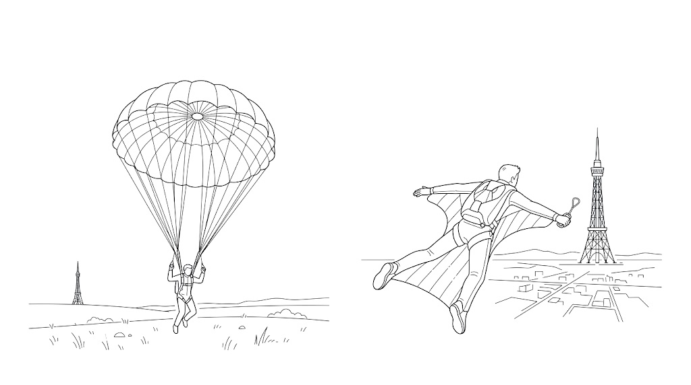
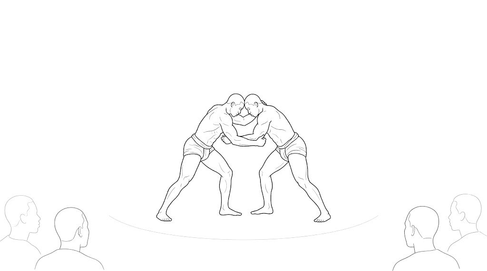
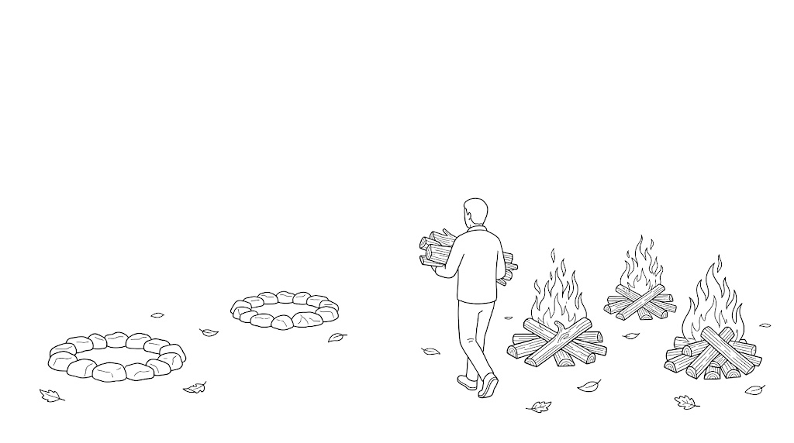

庫裡已經有一篇麥康納講「信念與全然投入」的心法整理。這篇不重講那些道理，它處理的是另一個問題：那些道理是從哪裡長出來的。一個 18 歲的德州小孩，怎麼變成後來那個敢把 1450 萬美元推回去的人。他自己的答案有點反直覺：他不是先弄懂了「我是誰」才敢決定，而是先做了幾個不能反悔的決定，人才被那些決定逼出形狀來。▶ 0:00
這是 Steven Bartlett 的 The Diary Of A CEO，兩個多小時，跟庫裡那篇 Modern Wisdom 的訪談只差十一天，同一輪新書宣傳。但兩場的形狀完全不同：那場談的是他現在信什麼，這場問的是他怎麼變成這個人。所以底下你會看到大量的故事而不是格言。重複的道理我只用一句話帶過並連回那篇，把版面留給故事本身。
01被誇大，又立刻被打回原形▶ 2:40
他家的教養方式，是兩股力量同時往反方向拉。
母親那股是把你往上吹。走進任何一個讓你緊張的場合，她的話是：「別像個想買下這地方的人那樣走進去，要像你已經擁有它那樣走進去。」她會誇大你的成就到近乎編造的程度。他相信自己拿過德州兒童選美冠軍相信了三十六年，直到三十六年後拿起獎盃一看，上面寫著亞軍。七年級的詩歌比賽，母親把一首不是他寫的詩塞給他說「我知道不是你寫的，但寫得真好，交上去」。他還得獎了。
父親那股是把你往下壓。家裡不准任何人踮著腳走路，你剛贏了比賽、剛有一部票房大賣的電影，回到家一樣立刻被拉回地面。他事後回想，覺得父母其實可以再寬容一點，讓贏了田徑賽的哥哥昂首闊步穿過客廳一次也好，但那是不被允許的。
兩股力量夾出來的結果是：外面發生的任何事，都不能拿來當你的身分。被吹起來的是你的膽子，不是你的自我評價。他母親那句常掛嘴邊的話最能說明這個家的味道：「別再跟我要新鞋了，我介紹一個沒有腳的孩子給你認識。」
02三個不准說的詞，和一個八歲下的定義▶ 6:40
承上，那組價值不是用講的，是用罰的。家裡只有三件事會被處罰：說「我做不到」、說謊、跟家人說「我恨你」。
某個週六早上他推不動割草機，進屋跟父親說「我發不動割草機」。父親轉過頭盯著他，走出去弄了十分鐘，發動了，然後蹲下來看著他說：「兒子你看，你只是遇到麻煩而已。」九歲那年他在自己的生日派對上跟哥哥說了「我恨你」，四十個小孩在後院，母親當場把整個派對停掉，把他拉到屋子側邊處罰完，擦乾眼淚，派對繼續。
處罰的方式是打，但不禁足。他父母的邏輯是：禁足等於拿走你的時間，而時間是你最寶貴的東西，所以我們不拿；痛一下，翻過去。他自己的總結很有意思，他說他學到的其實是這三個詞的反義詞：因為說「我做不到」、說謊、說「我恨你」都帶來痛，所以反過來那三件事一定帶來好的東西。說實話、去愛、相信你可以。到今天這三樣東西已經不在他腦子裡，而是在他的身體裡。
八歲那年還發生了另一件事。他在鄉村俱樂部停車場跟兩個男人握手，父親要他喊 sir。他事後才知道那兩個是來討債的。但當時他八歲的腦袋在想的是：所有父親要我喊 sir 的人，除了年紀大之外唯一的共同點，是他們都是父親。於是他心裡把等式列了出來：當上父親，就是成功了。這是他人生的第一個目標，比想當演員早了整整十年。他現在有三個孩子，他說沒有任何一段拿去當父親的時間，會讓他覺得那時間可以花得更好。
03澳洲那一年：一個握手，換一年不能回頭▶ 16:18
承上，八歲那個定義要很久以後才兌現。十八歲的他，人生正在最順的時候。
高中畢業，成績全 A，父母開心，有打工、口袋裡每天有 45 美元現金、有一台付清的車、跟全校最好看的女生交往、還跟隔壁學校的女生見面、高爾夫差點打到四、進過兩次一桿進洞、十八歲之後家裡取消門禁。他自己形容那是「一路綠燈」，那是他寫進《綠燈》的那個比喻的來源。
然後他媽問了一句：要不要去當交換學生。選項是瑞典和澳洲，他選澳洲，理由是那裡講英文，而且說不定會遇到超模 Elle Macpherson。他自己說那是十八歲的腦袋在運作。
他被告知會住在雪梨郊外。結果那個「郊外」離雪梨三個半小時，是一個人口 305 人的小鎮。車停在碎石車道上，主人說「歡迎來到澳洲」。他的車沒了、女朋友沒了、高爾夫球具沒了、口袋裡的錢沒了，而且連週五週六都有晚上十點的門禁。
學校把他降回低一個年級，同學沒人有車，興趣也對不上，他每一科都在被當。於是他開始翹課去圖書館，在那裡遇見了拜倫的詩。他的生活變成一個極端規律的循環：五點吃晚餐、五點半吃完、洗碗、回房、泡澡、聽那三卷卡帶（U2 的《Rattle and Hum》、Maxi Priest、INXS）、在浴缸裡讀拜倫。一週六個晚上。他每天跑六英里，吃素，瘦到 135 磅，一度非常確信自己接下來要去南非當僧侶。他寫十六頁的信給自己，然後用十七頁回信給自己。
他回頭看才明白，那些紀律是他在給自己一個每天可以量的東西，因為家裡那邊他整個人是散的。而真正撐住他的不是紀律，是一個更硬的東西。
出發前，美國那邊的負責人要他簽一份合約，內容是除非家裡有人過世或他重病，否則一年之內不准回國。他說我不簽，我跟你握手，因為我本來就是要待滿一年的。他父親從小告訴他，兩個男人握手就不需要合約，那個握手本身就是合約。
於是那一年變成不可協商的。他說得很直接：「因為那件事沒有商量餘地，我從來沒有給我的腦袋一個機會去想『你其實可以回家』。」而當回家從選項清單上消失之後，事情反而變輕了。他開始能笑自己的處境，開始能過一點生活，也開始在那裡寫下人生第一批詩。他甚至從中找到一點力量：這件事越難，我出去以後拿到的東西就越大。他後來承認，那句話當時多半是他在騙自己，是貼在冰箱上不斷複誦的咒語，但那個咒語花了一段時間真的沉下去，變成他相信的事。

拉了傘：安全落地，但你要去的地方沒到還在飛：顛簸，但到得了04那通電話：「那就別半吊子」▶ 26:36
承上，澳洲那年給了他第一個模式。第二次用上它是在大二快結束的時候。
他當時走在往法學院的路上，是個標準的用功學生，成績全 A。期末考前兩小時，他人生第一次闔上書說「你會了，不用再念了」。他看到旁邊一疊雜誌，翻了七本都沒東西，第八本底下壓著一本書：《世界上最偉大的推銷員》。他念出書名，說了句「這誰啊」，把它撿起來。
第一章講的是養成好習慣、成為好習慣的奴隸。他坐在那裡想：如果我違背自己去念法學院，那不是一個好習慣。他把這件事推到底：去念法律，是讓自己成為一個壞習慣的奴隸，而那個壞習慣叫做「你擅長這個，所以你就該做這個」。
然後是那通電話。學費是父親出的，他必須先取得同意。他把打電話的時間算得很細：週一不行，父親剛回工作、壓力大；週二晚上七點半，一週已經上軌道，晚飯吃完了，人在沙發上跟母親喝著啤酒。他七點三十六分撥出去。
「爸，我不想念法學院了，我想念電影學校。」他說他脖子後面開始冒汗，等著一頓罵。五秒的停頓之後，他聽見的是：「你確定那是你想做的事嗎？」他說是的。又一次長長的停頓。然後：
他說父親那句話不只是同意，那句話是「好，那就來真的，把那件事扛起來、給它馬力、去做」。他後來自己當了父親才明白那五秒裡發生了什麼事：你用一套規則把孩子養大，跟他說照這樣走大概會過得不錯；但你心裡真正在等的，是有一天他打電話回來說我要走我自己的路。那一刻做父母的會害怕，但也會在心裡說「好」。
他認為關鍵在他問的方式。他沒有結巴，他不是真的在請示，他是在宣告。父親聽見的是宣告，所以回的是宣告。
「別半吊子」後來長成他一套關於關係的理論，他叫它「擁有，不要租」。這條跟他在另一場訪談講的屋主與租客心態是同一件事，庫裡那篇 活出信念與全然投入 已經完整寫過，這裡只補他在這場多講的一段：他說多數關係，無論是雇一個助理還是交往，其實都不會持續一輩子；但你抱著「希望這是一輩子」進去，會給雙方一種尊嚴和力量，讓你們把這段關係做到它能到的最好。抱著租客心態進去，第一個紅燈亮起你就走了，而且你會把那個紅燈解讀成「看吧，接下來只會更糟」。
05年輕男人到底怎麼了：獨立這件事可能被賣得太貴▶ 36:36
承上，前面談的都是他個人的選擇。這一段是整場訪談唯一一次，兩個人一起停下來看這個時代。
提問的是主持人。他說他觀察到，他認識的人裡過得最踏實的，通常是被依賴最多的那些人；而過得最辛苦、正在治療、有存在危機的那些朋友，是最獨立的那些人。沒有人依賴他們，他們也不依賴任何人。他舉了一個朋友：38 歲，高樓公寓、單身、沒小孩、接案所以不屬於任何團隊、在家工作，是一幅獨立的完美畫像。六個月後再見面，那個朋友告訴他，有三四個月他根本起不了床，生活裡沒有任何意義，然後他飛到美國受了洗。
麥康納的回應是把「獨立」和「被需要」分開來看。他說：我們想要、也需要被依賴。一個純粹獨立的生活，除了自己需要的東西之外沒有任何要負責的，沒有別的園子要照顧，沒有任何集體的東西，那樣的生活裡沒有人會對你說「謝謝，我剛好需要這個」。
他不是在否定自立。自立在他的價值排序裡是最上面那幾個之一。他講了自己有過幾年不信神的日子，那幾年他完全靠自立，「一切都在我身上」。他說那幾年極有價值，因為他必須自己戳破自己的謊，必須跟自己說「這件事到你為止」，必須停止當一個一犯再犯的人。他用了一個字源的角度：sin 這個字原本是射箭術語，意思是沒射中靶。他說當時的他就是一直沒射中靶，而且他不想再過那種週日被赦免、週一週二週五又照做一遍的日子。
後來他發現自立跟信仰兩件事根本不互斥。他的說法是，他聽見上帝在鼓掌：「謝謝，我需要更多像你這樣的人，願意說我負責、我今天的選擇決定我明天在哪裡、我的選擇有後果。」
主持人在後面補了一個數據上的角度：他讀過一項研究分析大量遺書，貫穿其中最普遍的情緒，是覺得沒有人需要你，或更糟，覺得沒有你他們會過得更好。這條線跟麥康納那句「我們需要被依賴」正好接在一起。
06父親走了，世界突然變平▶ 42:29
承上，前一段講的是「需要被依賴」。這一段是他自己失去依靠的那一天。
1992 年，他第一部電影《年少輕狂》開拍第五天，父親過世。父親曾經跟三個兒子說過，他走的時候會是在跟他們母親做愛的時候，結果他真的說中了。麥康納講這件事的語氣是帶著笑的：「那不是個壞走法，他自己說中的。」
但接下來那句就不是笑話了。他說那天早上震驚過去之後，他明白的是：你不再有那個永遠罩你的人了。在他心裡，父親的地位高過政府、高過宗教、高過所有東西，那是「如果我真的走投無路，我爸會挺我」的那個底。這是他在這場訪談裡第二次用到降落傘這個字。那把傘沒有了。
然後世界變平了。他的原話是：那些他仰望的東西、那些他崇拜的人和地方，突然全部降到跟他同一個高度；而那些他原本俯視、帶著優越感看待的東西，也升上來跟他平視了。他說那一刻他知道：該長成一個男人了，往前走，別再演那個樣子而是真的變成那樣。
就是在那段時間的某個半夜，他醒過來，腦子裡卡著一句話，他起身把它刻在一棵樹上：
少一點讚嘆，多一點投入。
這句話在庫裡的《綠燈》讀書筆記裡出現過，是他書裡的名句之一。但那本書沒告訴你它是那一晚從樹幹上刻下來的。
他在這場給了一個很具體的例子說明「只有讚嘆」會發生什麼事。他跟柯恩兄弟吃飯，那是他最喜歡的導演。他太崇敬他們了，緊張、講話結巴、整頓飯搞砸。他回頭看那晚說：那就是為什麼他們從來沒找我演過任何東西。他說一個道理：你光是「太崇敬對方」，就會在無意間把自己的價值調低。對方要的不是你拍馬屁，是想認識你這個人，甚至希望你不同意他。
071992 年，他在紙上寫下十個目標▶ 54:01
承上，父親過世那年，他寫了一張清單。主持人在訪談裡把那張紙拿出來，他一條一條念了出來。
- 成為父親
- 找到並留住一個屬於我的女人
- 維持我跟神的關係
- 追逐更好的自己
- 當一個利己的功利主義者
- 多冒險
- 跟母親和家人保持親近
- 拿到奧斯卡最佳男主角
- 回頭看，並享受那片風景
- Just keep livin
主持人問他，回頭看這張清單，有沒有哪一條你希望當初沒寫、或者有什麼你希望當初有寫進去的。他的回答只有一句：「不，我一個字都不會改。」
值得注意的是第一條和第八條的關係。第一條是他八歲就下的定義，第八條是這個行業的最高榮譽，而他把八歲那個放在第一。三十三年後這兩條都兌現了。
08沒有阻力，就沒有形狀▶ 1:01:49
承上，清單裡的第六條是「多冒險」。主持人追問了一個他反覆提到的字：阻力（resistance）。你是刻意在追求阻力嗎？
他的回答不是心靈成長式的，是物理式的。他說：你要有重力才會有形狀。沒有邊界、沒有羞恥、沒有一點罪惡感的東西是四維的，沒有形狀，你在無重力裡漂浮，你根本沒有槓桿可以推。他引了一位藝術家的話：「限制揭露風格。」如果人生全部都是綠燈，沒有黃燈紅燈、沒有任何要你停下來的理由，那你是在繞圈子，還是在原地把油燒光？
但他也很誠實地說自己在這件事上笨拙過。他成名之後，身邊足夠多的人告訴他我愛你、有魚子醬和香檳，他的反應是「憑什麼是我，我不配」。於是他開始刻意搞砸事情，他形容那是「我跑下坡的時候故意絆自己一跤，把鼻子磕出血，好讓我還能感覺得到」。他說那種自己製造的阻力沒有必要，因為只要你還有企圖心，阻力自己會來。
這一段他念了一首自己寫的詩，標題叫〈小費已內含〉（Tips Included）。他說寫這首詩的起點是參與獎。
當加分被內建，該給的分就不再算數。當更多給了我們更少，匯率就歪了。當犯罪之前就先給了特赦，我們更容易去犯，因為沒有罰則。我們開始打成平手而不是打贏，當獎盃是給欄裡每一頭牛的。如果我留在門廊上是因為你替我扛了，那你回頭看的時候，我沒辦法罩你的背。如果沒有門禁，我們會整晚不回家。酒吧不用結帳，我們就會喝醉然後打起來。你一直幫我抬，我就會失去我全部的力氣。吃到飽讓我們用 3.8 的教育拿到 4.2 的成績。我們偷了自己，還沒被抓到。因為小費已內含的時候，服務就會變差。
他把這首詩推到 AI 上。他問了一個問題：你想出一個點子，然後寫、然後改、然後說不對不是這樣、然後再改，這整個過程有多少價值？他的直覺是：AI 可以當路標、可以幫你整理，但學會一件事本身需要流汗的那一段。主持人補了現在的研究，說用 AI 產出的人不但記不住自己做了什麼，還會開始用 AI 的語氣說話，慢慢失去自己的聲音。這一段跟庫裡那篇 活出信念與全然投入 的收尾是同一件事，這裡不重複。
09永遠差一點的那個東西，和馬利的摔角場▶ 1:07:31
承上，阻力來自外面。這一段講的是他自己造出來的那種阻力。
他有一個概念叫期待落差。他說他從來沒有拍過一部電影或一場表演，達到他心裡認為它可以到的樣子。因為他心裡想的是「神性」（divine），而做出來的東西可能非常好、可能感動很多人、甚至帶點魔力，但它就是不是神性。那個關不上的縫隙，就是把他推去做下一件事的東西。他說每一個做出偉大東西的人，心裡都有一個很大的期待落差。
他給的操作方式是：瞄準 A，拿到 C，好過瞄準 C，拿到 F。所以去追求完美，反正現實一定會落在下面。真正的功課是當現實揭曉的那一刻，你要多快能夠說「好，但因為我是往完美去的，我從這件事、這個人、我自己身上拿到的東西，比我只想著及格要多得多」。他承認自己有時候要花上一個星期才轉得過來。
主持人問了一個很尖的問題：如果有一次，你瞄準完美，而它真的完美地實現了，你會快樂嗎？他的回答是「我不知道」。主持人追問：會不會反而讓你害怕？他說：兩個都有吧。然後他講了那個晚上的故事。
那是 1999 年，他在西非馬利的多貢地區，跟嚮導從村子走到村子，每個村之間相隔十到十五英里。他用了假名叫 David，說自己是作家兼拳擊手。村民對寫作沒興趣，但對摔角非常有興趣。
他走了十四英里到一個叫 Benji Matu 的村子，躺在地上拉筋，聽見兩個十八歲少年在對他叫陣。他問嚮導那兩個人是誰，嚮導說他們是村裡的摔角手，正在挑戰你。他笑說：他們話講得挺多的，我們美國有句話說話講太多的人通常沒那麼行。話還沒說完，人群尖叫，那兩個少年拔腿就跑。因為村裡真正的冠軍出現了。
那個人叫 Michelle，五呎九，腿像樹幹，兩百二十磅，腰上綁著麻布袋。他一句話都沒說，指了指麥康納，指了指自己，再指向旁邊那個土坑。
他說他的心臟開始狂跳，一邊耳朵在說「不要」，另一邊耳朵在說「如果你不去，你會後悔一輩子，至少這會是個好故事」。他站了起來。
兩回合。他被鎖過腿差點要拍地投降，鬍子上戴的護身符被扯掉兩個，膝蓋和腳踝都在流血，喘不過氣，全身是汗；他抬頭看 Michelle，對方身上幾乎沒出汗。長老把兩個人分開，把兩隻手都舉了起來。Michelle 轉身跑掉了，村民把麥康納扛上肩。那天晚上他躺在土屋屋頂上，第一次看見南十字星，像霓虹燈釘在黑幕上，三十分鐘裡他數到二十九顆流星。他心裡想：我可能有一條直通天上的線，我可能是天選之人。
正要闔眼的時候他喉嚨裡有痰，坐起來往屋頂外吐，忘了自己戴著防蚊面罩。那口痰糊在自己臉上。
他說那就是幽默出現的地方，也是他讀到的答案：「我正想著我可能有直通的線，結果我朝自己臉上吐了一口痰。」他把那件事讀成上帝在說：你做得不錯，但沒那麼不錯，老兄。
故事還有後半。隔天早上他要走那十四英里去下一個村子，走到村界那棵樹後面，Michelle 跳了出來。一句話沒說，鞠了個躬，抓住他的手，陪他走完那十四英里，把他送到下一個部落的邊界，然後自己走回家。六年後他不預先通知地再走了一次同樣的路，Michelle 已經生了五個孩子，摔斷過髖骨，走路一跛一跛。他們說好不再摔了，一起吃了頓晚餐。隔天早上，同一棵樹，Michelle 出來、鞠躬、握住他的手，又走了十四英里。
當年他問過嚮導：那天晚上我表現得怎麼樣？嚮導說：
嚮導還補了一句話，用的字是「你應付住了 Michelle」。不是贏了他，是應付住了。全村本來以為 Michelle 十秒鐘就會把這個叫 Da 的白人扛在背上結束。

村民扛他上肩，不是因為他沒輸，是因為他站起來走進了場10怎麼變成最好的：四個步驟，第四步是你自己▶ 1:36:07
承上，前面全是故事。這一段是他難得直接給方法的地方，因為主持人問的是「這裡面有沒有可以轉移給別人的東西」。他說這也是他跟自己孩子談未來時會講的版本。
第一，先看你的 DNA 裡有什麼。他想打籃球想了很多年，他想灌籃，但那不在他的 DNA 裡，不管他多努力都不會灌籃。他想當華盛頓隊的跑鋒，但他不夠快也不夠壯。所以第一個問題是：你對什麼有天生的能力。
第二，你願意為哪件事去受教育、去工作、去拚。他說這一點非常重要，因為有些人有天分卻不為它努力，就靠著手上有的東西過，最後停在場中央。
第三，耐力。他把自己那段離開好萊塢的經歷放在這一格。
第四，供需。你有天生能力、你把它練成了技藝，接下來的問題是：這個東西世界要不要。
他補了一個反過來的路徑：有時候你對某件事沒有天分，但你去學了一門新手藝、拚了，等你真的做好了，你會發現「我原本不喜歡這個，但我現在喜歡了」。做得好本身會讓一件事變得好做。
11為什麼我推掉了 1450 萬美元▶ 1:41:59
承上，第三步是耐力。這是他這輩子最貴的一次耐力。
先說起點。他那時候是浪漫喜劇的第一順位，錢很好賺，片子很好玩，而且他自己說「我覺得我明天就能再拍一部」。問題就出在這裡：他拿到的是數量，沒有拿到品質。同一時間他愛上了 Camila，她懷著第一個孩子，他形容那段日子是「屋頂變高了，地下室變深了，寬度也變寬了，我哭得更多、笑得更大聲、痛得更真」。生活變得非常有生命力，工作卻沒有。
他跟經紀人說：我要演劇情片。好萊塢不給，他說不管我減多少片酬都不給。於是他說了那句決定：如果我不能做我想做的，那我就不做我一直在做的。他跟 Camila 一起做了這個決定，用的是澳洲那一年的規格：不可協商，我們不會回頭。
然後好幾個月，什麼都沒有。他開始想自己是不是要去當老師、要不要回去念法律，覺得「我剛給自己買了一張離開好萊塢的單程票」。
接著片約來了，是一部動作喜劇。800 萬美元。他讀了，說不了，謝謝，這正是我不做的那種東西。回來 1000 萬。他說我連讀都不讀了。回來 1200 萬。他說幫我跟他們說不用了。回來 1450 萬。
他說了一句很誠實的話：「讓我再讀一次。」
他讀了。是同一批字，跟 800 萬那份一樣的東西，但寫得比較好，比較好笑，他可以看見自己在裡面，他覺得他能把它演成一個東西。他最後還是說了不。
他對後續的解釋是一個他自己承認沒有證據的推論。他認為他在離開一年後推掉那 1450 萬，這件事在好萊塢傳開了，傳出去的訊息是：麥康納不是在虛張聲勢。他不是退場了，他有計畫，他不是可以租的。而不能租的東西，忽然變得有點吸引力。
他離開了二十個月。二十個月之後，《殺手喬》《泥土》《藥命俱樂部》《舞棍俱樂部》《無間警探》《下流正義》全部進來了。主持人問：如果你從來沒有踏出去，這些會來嗎？他的回答沒有留任何餘地：「不會。連『也許』我都說不出口。不會，它們不會來。」
他兄弟當時的反應跟大部分人一樣：小老弟你哪根筋不對。而他撐住的方式跟澳洲那次一模一樣，他跟 Camila 一起立了那個約，說好不管拖多久都不回頭。
12「我知道我是誰」太難了，先知道你不是誰▶ 1:47:59
承上，主持人在這裡下了一個結論，說：你在那些時刻知道自己是誰、不是誰，這是很多人做不到的。
麥康納打斷了他。這是整場訪談我認為最有用的一句話。
對我們所有人來說更好的起點，也是對我來說比較真實的，是：那些時刻我知道的是我不是誰。」
他把兩次都拆給你看。演戲那次，他並不是手上握著一個劇本說「就是這個，沒人讓我演」；他只是知道自己不要再演那些。澳洲那次，他不知道自己是誰，但他知道自己不能是那個說「老子不玩了」就走人的人，因為他跟人握了手。
- 需要一個完整的答案
- 那個答案通常要等到某個未來才會出現
- 答不出來就不敢動
- 變成在等一個百分之百確定的逃生計畫
- 多數人卡在這一格
- 只要否定一件事就成立
- 現在就答得出來
- 手上不需要有更好的替代方案
- 他推掉那些片約時，並沒有更好的劇本
- 澳洲那年，他只知道自己不能是說走就走的人
主持人接著說：多數人卡住，是因為在等一個百分之百確定的逃生計畫。麥康納的回應繞了一圈回到自己身上：也許正因為我每一部戲進去的時候都百分之百確定它會很棒，而它們並不是每一部都很棒。
他舉了《藥命俱樂部》當例子，這部片為他拿到奧斯卡。那部電影 490 萬美元、25 天拍完，而在那之前，它根本不存在。沒有錢、沒有檔期、沒有開拍日。他們幾個人在一個房間裡決定：我們就說我們十月開拍。然後每個人走出那個房間，逢人就說十月開拍。他經紀人一直說你不是十月開拍，沒有錢，沒有那部電影，你能不能讀一下這個檔期的其他劇本。他說不行，我十月要拍《藥命俱樂部》。
他形容那件事的用字很精準。他說我們不是「顯化」了它，我們只是沒有眨眼。所有人口徑一致，講同一句話，講到別人開始相信。
然後他把這件事跟那通打給父親的電話接了起來：那次他也沒有結巴。他總結成一句：
話語是一時的，意圖是重量級的。
從這裡他岔進了一段關於道歉的話，那條線在庫裡那篇 活出信念與全然投入 已經寫過。這裡只留他多說的那一句：如果你原諒了我，我的第一件工作不是感謝你，是去改掉那個行為，讓我不用再來跟你說一次對不起。
13最大的強項，就是最大的弱點▶ 1:56:27
承上，這場訪談的收尾是一個固定問題：你最大的弱點是什麼，最大的強項是什麼。他第一句話就說：這兩個常常是同一個東西。
他說大家都跟他講，你最大的資產是敢冒險。他的回應讓人意外：我覺得我需要冒更多險。他解釋了為什麼，而且說得毫不掩飾：我成功了，我有一個家，有大門，有警衛，三個孩子，一個太太，一切都安全了。守住這些、繼續往那幾堆火裡加柴，那是最重要的事。但他馬上自己反駁：你可以那樣做，但你還是得下場。你要當一個「住在家裡的父親」嗎？孩子需要看見你去工作，需要跟你一起去工作，需要看見你和他們的母親出門去某些地方。去世界裡參與，去學新的東西，不管是身體的邊界還是腦子的邊界。
然後是他對自己那段診斷，這是全場最坦白的地方。他說他最大的資產之一，是當他確定一件事，他可以全押進去，那會變成引擎、變成動能，帶他走很遠。但同一件事的另一面是：
「我會因為自己的確定，在我在乎的人身上留下不必要的彈片。因為我對我認定的那個真相太投入、太著迷，我會把另一種做法整個擋在外面。而我擋掉它，是因為我沒有那個底氣說『好啊，讓我看看那個』。因為我還是會想，如果我看了，我會失去一些我現在有的東西。這件事我還在練。」
訪談裡還有一段他描述自己現在的位置，我認為值得單獨放在最後。主持人問他現在處在人生的哪個季節。
他說過去八年他愛上了秋天。他從前是個夏天的人，不穿上衣不穿鞋、燈火通明、外向、什麼都好。現在他喜歡秋天，理由是：他對太多事情有興趣了，而他的直覺是不要再點新的營火，要往已經生起來的那幾堆火裡加柴。秋天的雲替他把野心稍微掐住一點，像給了他一個屋頂。他說他現在不太喜歡三十呎的挑高，他喜歡十呎、八呎那種；他覺得往橫向看比較有企圖心，而不是往四面八方看。他要的是把那些夢、那些詩、那些禱告變成現實，而且他喜歡有一點遮蔭。

不再點新的火往已經燒著的那幾堆加柴—怎麼把它用在你身上
- 把退路先拿掉，比把決心加大有效：他三次關鍵決定的共同點不是意志力強，是他先讓「回頭」這個選項從桌上消失（一個握手、一通不結巴的電話、一個跟太太立的約）。你現在有沒有一件事，是因為留了後路所以一直做不完的。與其鼓勵自己更堅持，不如去拆掉那條後路，哪怕只是告訴一個人「我十月要交」。
- 先問「我不是誰」，別急著問「我是誰」：卡住的時候不用等一個百分之百確定的答案。他推掉那些片約時，手上並沒有更好的劇本，他只知道自己不再是那個。列三件你確定自己「不要再是」的事，通常比列十個目標有用。
- 訓練上的「阻力」不是自虐，是形狀：他說沒有重力就沒有形狀，但也承認自己曾經刻意搞砸事情來製造痛感。這兩件事的差別值得放在心裡：週期化的課表、爬升、逆風，是給你形狀的阻力；沒事把自己操到受傷不是。只要你還有企圖心，真正的阻力自己會來，不用去造。
- 瞄準 A，拿到 C：把標準設在你覺得它「可以到的樣子」，然後接受現實一定落在下面。真正要練的不是設標準，是結果揭曉時你要多快能說「好，但我因為往那裡去，多拿到了什麼」。他自己有時候要花一個星期，你可以練到更快。
- 不要再點新營火：如果你手上同時開著好幾個專案，他四十歲之後的做法是不再開新的，只往已經燒著的火裡加柴。這條特別適合在「什麼都想做」的時候拿出來看一次。